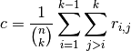
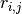

Between species analyzes¶
In this chapter, we analyzed the gene expression differences between species across development. The pipeline is divided into two big tasks. The first, is to determine the orthologs genes between all four species. Then, to determine the set of genes with the most divergent/conserved expression profiles among species.
Determine orthologous genes¶
First, we got the DNA sequences (fasta format) of mouse, opossum, and pig from ENSEMBL, using Perl scrips: mouse.pl, opossum.pl, and pig.pl
#############################
# Get FASTA sequence of genes
#############################
for specie in mouse opossum pig; do
perl $specie.pl > $specie.genes.fasta
done
Then, using bat’s transcriptome as reference (Trinity.subset.fasta) we aligned (blastn, E-value 1e-20), one by one, the transcriptomes of mouse, opossum, and pig .
#######################################
# Blast BAT genes against other species
#######################################
for specie in mouse opossum pig; do
echo makdeblastdb $species =====================
makeblastdb -in $specie.genes.fasta -dbtype nucl
echo blastn bat-$specie ------------------------
blastn \
-query Trinity.subset.fasta \
-db $specie.genes.fasta \
-out $specie.blastn.outfmt6 \
-evalue 1e-20 \
-num_threads 10 \
-max_target_seqs 1 \
-outfmt 6
done
To reduce ambiguity, we filter out bat genes matching more than one orthologs gene in any other species. We extracted the gene-id columns (1 and 2) of the output files of blastn,
############################################
# Filter out the BAT genes with
# isoforms matching different ortholog genes
############################################
for specie in mouse opossum pig; do
echo $specie ============================
awk 'BEGIN{FS=OFS="\t"} {
split($1,a,"_seq")
print a[1],$2}' ${specie}.blastn.outfmt6 \
| sort -u -k1,1 \
| awk 'BEGIN{FS=OFS="\t"} {
split($2,a,"|")
print $1,a[1]}' > bat_${specie}.orthologs.txt
done
removed duplicates,
#######################################
# Remove non-unique bat-species matches
#######################################
for specie in mouse opossum pig; do
sort -k2 bat_${species}.orthologs.txt \
| uniq -f1 -u \
> bat_${species}.orthologs.uniq.txt
done
and finally, we used a python script (getAllOrthologs2.py) to determine the bat genes that have orthologs sequences in all the other three species.
###############################################################
# Find bat genes with orthologous genes in all the other species
################################################################
python getAllOrthologs2.py > all.orthologs.uniq.txt
Conservation of gene expression across species¶
Experimental settings and conservation metric¶
We analyzed how conserved are the gene expression profiles of bat, mouse, opossum, and pig across embryonic limb development on three experimental settings (see Tables 1, and 2).
Stage Experimental settings W2 no no yes W3-4 yes yes yes W6 yes yes yes
Mouse Bat Opossum* Pig W2 NA NA (30) NA W3_4 14 28 (31) 22 W6 15 29 (32) 26
To quantify conservation at each development stage, we use the mean of all species pairwise Spearman coefficients (  ):
):

Where  is the Spearman coefficient between species  and
and  at a given stage, and
at a given stage, and  is the total number of species under study in a particular experimental setting (3 for setting 1 and 2, and 4 for setting 3). We selected Spearman rather than Pearson coefficient, as the former is robust against out-layers.
is the total number of species under study in a particular experimental setting (3 for setting 1 and 2, and 4 for setting 3). We selected Spearman rather than Pearson coefficient, as the former is robust against out-layers.
Results¶
In what follows, all analyzes were done using R, a free, open-source, data-analysis software. The R scripts for experimental setting 1, 2, and 3 can be download here:
Normalization and scaling of the RNA-seq libraries¶
The gene expression values of each RNA-seq library were normalized by gene length and library size as described previously. Then for each stage and experimental settings, were scaled the libraries using the DESeq method ( see Figure 1).


Figure 1: Normalization and scaling of RNA-seq libraries. Gene expression was normalized by gene length and library size (first row). Then libraries were scaled to reduce between library variance using DESeq method (second row). Columns 1, 2, and 3 correspond to experiment settings 1, 2, and 3, respectively. FL: fore limbs; HL: hind limbs; b_: bat; m_: mouse; o_: opposum; p_: pig
Conservation of gene expression profiles¶
Based on 6,583 orthologous (that are common to all 4 species), we use equation (1) to measure between-species gene expression conservation at each developmental stage. All pairwise Spearman coefficients are presented on Figure 2, where it can be seen that all species are positively correlated ( all Spearman coefficients were above 0.5 ). On experimental settings 1 and 2, the conservation level (Figure 3A, and 3B) decreases from stages 3-4 to 6, and the same tendency is observed on experimental setting 3, where there is a constant decrease in conservation from stage 2 to 6 (Figure 3C). To estimate how robust this conservation measurements are against different sets or orthologous genes, we created gene subsamples with sizes ranging from 50 to 100% of all orthologous genes (Figure 3). For each sample size, we measured conservation on 500 sets of genes randomly selected. Based on the resulting distributions (shown as boxplots on Figure 3) it can be observed that for experimental setting 3, only 70% of the genes are necessary to find a statistically significant difference between conservation levels 2 and 3-4 (not overlapping 95% confidence intervals; Figure 3C). However on all experimental settings, the conservation differences between stages 3-4 and 6 were highly dependent on the chosen genes. In this cases, using 90% or less orthologous genes produces not significant conservation differences between stages (the 95% confidence intervals overlap in all cases; Figures 3A, 3B, and 3C).


Figure 2: Pairwise Spearman coefficients values. Rows a, b, and c correspond to experimental settings 1, 2, and 3. FL: fore limbs; HL: hind limbs; b_: bat; m_: mouse; o_: opposum; p_: pig


Figure 3: Conservation of gene expression between species. Figures A, B, and C correspond to experimental settings 1, 2, and 3 respectively. FL: fore limbs; HL: hind limbs.
Discussion¶
We found that gene expression conservation between bat, mouse, and opossum decreases from stage 2 to 6. This trend is the opposite of the one observed for morphological conservation at equivalent limb developmental stages ( species: mouse, opossum, pig, and horse; Ross et al., 2013). This lack of correlation between genetic and morphological conservation patterns may spring from the fact that we only used orthologous genes in our analysis. We hypothesized that between-species morphological differences may be driven by genes that have been under the influence of divergent selective pressures on bat, mouse, and opossum and therefore unlikely to be orthologous
List of divergent and conserved genes¶
List of those genes that are conserved (or are different) among species at the different stages
I’ve cluster the orthologous genes according to their cross-species standard deviation (SD). High cross-species SD means that a gene is divergent across species, and low SD that the gene is conserved.
I’m attaching lists with the lowest SD (lower than 5% and 25% quantiles ) and greatest SD (greater than 75% and %95 quantiles) for all three scenarios: FL, HL, and noPig (HL but without pig species).
The first columns of each list are the gene ID of each species, followed by their expression values, and with the last column containing the cross-species SD. The distributions figures of the SD for each scenario are presented in Figure 4.


Figure 4: Distribution of standard deviation. Rows 1, 2, and 3 correspond to experimental settings 1, 2, and 3 respectively. FL: fore limbs; HL: hind limbs.